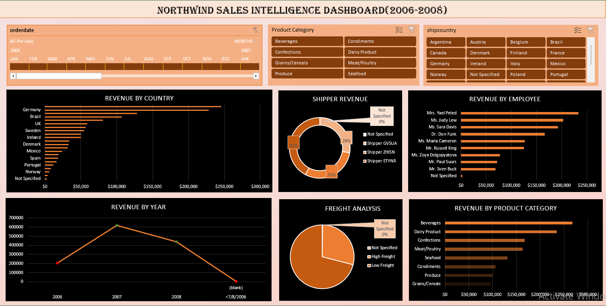

Analyzed 2,155 transactions across 21 countries for Northwind Traders — merged 12 reference tables with VLOOKUP, built 6 pivot tables, and delivered an interactive Excel dashboard with slicers and timeline filtering.
An interactive Excel dashboard combining all 6 pivot charts with 3 slicers (Product Category, Employee, Country) and a date timeline for dynamic filtering.

The Order Detail table had empty columns that needed to be populated from 12 reference sheets using VLOOKUP. This merged all relevant data into one analysis-ready table.
Populated fields from 7 reference tables using VLOOKUP with OrderID, ProductID, CustomerID, EmployeeID, and ShipperID as lookup keys.
Created three new calculated columns to support the analysis:
Order IDs 10248 and 10249 (5 rows) exist in the Order Detail table but are completely absent from the Sales Order reference table, which starts at Order ID 10250. All VLOOKUP formulas referencing Sales Order return #N/A for these rows.
Action: Flagged as "Not Specified" in pivot tables to maintain data integrity without discarding records.
Six pivot tables were created to analyze different dimensions of the Northwind sales data, each paired with a chart for visual clarity.
Beverages dominates with $267K (21.2% of total revenue). The top 3 categories — Beverages, Dairy Products ($234K), and Confections ($167K) — generate 53% of all revenue. Grains/Cereals and Produce are the weakest categories, both under $100K.
Revenue peaked in 2007 at $617K — a 200% increase from 2006's $205K. However, 2008 saw a significant 29% decline to $440K, signaling a potential market downturn or loss of key accounts.
Mrs. Yael Peled tops all reps at $232K, generating over 3x the revenue of the lowest performer Mr. Sven Buck ($68K). Studying top performers' strategies could lift overall team performance.
USA ($245K) and Germany ($228K) account for 37% of total revenue across 21 countries. This geographic concentration creates vulnerability — diversifying into underperforming markets could reduce this risk.
Shipper ETYNR handles 42% of all revenue ($533K), making it the dominant shipping partner. Negotiating volume discounts with this shipper could reduce shipping costs.
71% of orders are Low Freight (under $100), with 1,530 orders vs 620 High Freight orders. This suggests most shipments are lightweight or short-distance.
of total revenue concentrated in just 2 countries (USA & Germany) — a significant concentration risk
revenue decline from 2007 ($617K) to 2008 ($440K), requiring root cause investigation
performance gap between top rep ($232K) and lowest ($68K) — training opportunity
of revenue from top 3 categories — Beverages, Dairy, Confections lead the business